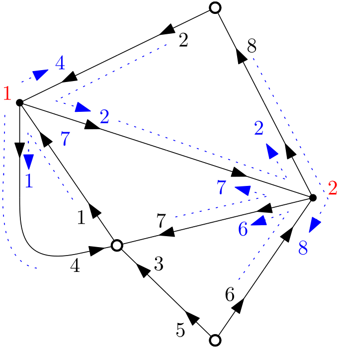
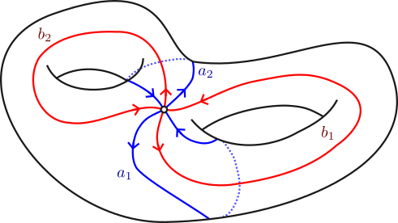

I did my PhD (2022-2025) at Ecole Normale Supérieure de Lyon, with Alice Guionnet and Grégory Miermont. My thesis' title was Random matrices and maps. The manuscript can be found here
Research interests
- Random matrix theory (in particular unitary matrices and multi-matrix models)
- Free probability (in particular its combinatorial aspects, and questions related to free entropies)
- Enumeration of maps (i.e. graphs embedded in surfaces)
- Random graphs and random hyperbolic surfaces
- Topological recursion
Preprints
Published articles
-
Topological expansion of unitary integrals and maps.
 -
Fay identities of Pfaffian type for hyperelliptic curves, with Gaëtan Borot.
